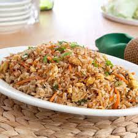

Fried Rice
 Fried rice on a platter
Description
This homemade version of the take-out classic is made with just seven ingredients and all in one pan.
Ingredients
- ½ cup oil
- 4 eggs
- 1 pinch salt
- ½ lb boneless, skinless chicken breast, sliced
- 1 ¾ cups rice, cooked
- 5 oz mixed vegetable
- ¼ cup light soy sauce
- 1 oz spring onion
Steps
- Heat a wok over medium-high heat for 5 minutes. Add the oil then stir in eggs and fry until just cooked. Once cooked, remove eggs from the wok and set aside.
- Heat up the wok until smoking hot and pour in the oil.
- Add the chicken breast and fry until they are just cooked.
- Add the rice and keep frying until they turn slightly brown.
- Add the vegetables and fry everything together until they are thoroughly cooked.
- Pour in the soy sauce and stir.
- Add the cooked eggs back in and toss them around until they break into pieces.
- Add in the spring onions and serve.
- Enjoy!